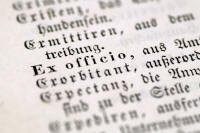

How to write a CELTA assignment

This guide will not guarantee you an A grade. The grade you get will depend on content more than form but if you follow this guide, you will almost certainly get a Pass grade.
 |
The mechanics |
Referencing
You will need to make sure that the in-text referencing and the
bibliography follow a standard convention.
For details, go to a website for advice. There’s a good guide
to the Harvard referencing system
produced for Anglia Ruskin University that you can access
by clicking here.
Briefly, however:
For in-text references
- Books and articles
- At every point in the text where there is a particular
reference, include the author’s surname and the year of
publication with page numbers if you are quoting specific words
– for example:
In his survey of the social habits of CELTA tutors, Bloggs (1998) refuted that ...
or
In his survey of the social habits of CELTA tutors, Bloggs (1998: 19) states that, "I can assert without fear of successful contradiction that …"
Make sure that it is 100% clear where your writing stops and a quotation begins, either by using inverted commas or indenting the citation etc. - Websites
- You may not know the author’s name or date (but give them as above
if you do) so this is acceptable:
It has been suggested (Wikipedia (2013)) that … - For the bibliography
- For ease of access, you may like to divide your bibliography into Books and Articles, Teaching Materials and Electronic resources.
- Books
- List references in alphabetical order by the surname of the
first author. If the author is unknown you should use
“Anon”
For up to three authors include all names; if there are more than three, give the first author’s surname and initials followed by et al.
Provide, in this order and format: Author surname/s and initial/s + ed. or eds. (if editor/s), Year of publication, Title in italics, Edition (if not the first edition) as ordinal number + ed., Place of publication: Publisher
For example:
Jones, D, ed., 1995, My Teaching and Other Fiascos, 5th ed., London: Concourse publications - Articles
- Include also: full journal title, volume number (issue number) and
page numbers, for example,
Bloggs, T, 1997, Developing fluency through ferret keeping, English Language Teaching Journal, 41, 3 pp. 18-83 - Electronic resources
- E-journals – include full URL and date of access, for example:
Bloggs TA, Brown G.C., 2012, Spoken English in Weston super Mare, in The Wandering Linguist [online], p. 105. Available from: http://www.wanderling.com/1111 [Accessed 23/08/2004] - Websites
- Supply author/s or corporate body, date of publication /
last update or copyright date, available from: URL [Accessed
date], for example:
eltconcourse.com, How to write a CELTA assignment, available from: http://eltconcourse.com/this page [accessed 02/11/2014]
or:
Bloggs, T, (no date), Ideas for a Creating a Happy Classroom, available from http://eltconcourse.com/training/happiness.pdf [Accessed 03/07/2014]
 |
Avoiding accusations of plagiarism |
Plagiarism is a form of fraud. It can be defined as presenting someone else's work, thoughts or words as if they were yours. Downloading and using unacknowledged material from the internet is included, of course.
- Never be afraid to show that you have accessed a range of other people’s work – nobody is expecting you to originate all the ideas and information in your work.
- Read your assignments and check whether everything that is not in your own words or from your own resources has been acknowledged.
- Make sure that you include in your bibliography anything you refer to in the text and exclude any reading to which you do not make explicit reference. This includes materials that you put in appendices and use in lessons and plans, by the way.
- Don’t be tempted to think that if you have changed a few words from a source you have read that you don’t need to acknowledge it – you do.
- If in any doubt – reference it.
|  |
Latin abbreviations |
Using the following is conventional but unimpressive if used wrongly.
- i.e.
- means that is, being the English abbreviation of the Latin id est. It should not be confused with e.g.
- e.g.
- means for example, and is the abbreviation of the Latin exempli gratia.
- cf.
- means compare with or consult, being short for conferre. In Latin it was an invitation to the reader to consult an alternative source to compare with what is being said. In English, it usually simply means compare.
- et al.
- means and others and comes from the Latin et alia oret alii. Use it when there are more than three authors.
- et seq.
- This is the Latin abbreviation for et sequens and
it means and what follows. It is used to direct
the reader to a page or paragraph in a text and note that this
is where the relevant section starts. For example:
See Smith, 1992:350 et seq. - sic
- This is the Latin for so or thus. If
you want to quote something that is incorrect or oddly phrased,
use this in brackets after the words or phrase to show that this
is how it appears in the original text. That way, the
reader will not think it is your mistake. Do not correct
anything that you are citing directly. For example:
The student told me that "this class are too difficile for me (sic)". - viz.
- is the usual abbreviation for videlicet which means namely or that is to say. It should not be confused with i.e.
- q.v.
- stands for quod vide, which means which see and refers to a term that should be looked up elsewhere in a document. It is often used for cross referencing.
- ibid.
- stands for ibidem, in the same place and is used in citations to refer to the immediately preceding citation.
- op. cit.
- stands for opere citato, in the work cited. It is used to refer to any previously cited work, not just the last one.
- pace
- means something like With all due respect to and is used by authors to show respect for the holder of a view with which they disagree (often disrespectfully).
- passim
- means very approximately throughout or frequently and refers to an idea or concept that occurs in many places in a cited work so a particular page reference is inappropriate.
In the Delta section of this site, there is a guide to writing in appropriate, formal, academic language. Click here to go to it.
 |
Structuring the assignments |
 |
Style |
This is academic writing so you need to maintain a certain formality.
- Avoid non-standard abbreviations, contractions and so on.
- Do not use slang or overly colloquial language.
- Avoid the use of meaningless adjectives such as nice, lovely and so on. They carry no sense so consider what you really mean: enjoyable, helpful, effective etc.
- Use the first person only when you are referring directly to your own experience. If you want to state your opinion, hedge it with something like, It can, however be argued that ...
- Use subheadings which actually relate to the following text.
- Use bullet points and tables sparingly and not as a substitute for connected prose. Lists and tables are helpful but you must discuss their content.
 |
Content |
Each CELTA centre sets its own assignments so there's no attempt here to tell you what to write (sorry) but only how to set it out and make it clear and coherent.
Your assignment should be between 750 and 1000 words long.
Part1: Introduction
The introduction needs to set out exactly what the title means to you.
Keep it short and to the point.
Part 2: The facts
This means what it says so it takes the form of an information report and follows this structure:
- Make a general statement identifying the topic
- Focus on the learner: This class is
at B1 level and hoping to take an IELTS examination
Focus on systems: English uses a range of forms to talk about the future. Here I focus only on ...
Focus on skills: Listening is a receptive skill, like reading, but requires specific subskills.
Focus on lessons from the classroom: I have identified four areas of my practice to focus on in this assignment. - Description
- Make sure in this section that you use proper subheadings
and paragraphs or the assignment will be hard to follow.
Focus on the learner: Describe the learner(s) area by area
Focus on systems: Describe the form, meaning and use of the language structure
Focus on skills: Describe what people have to be able to do to read, listen, write or speak in the topic area
Focus on lessons from the classroom: Describe (honestly) where your teaching is strong and weak and what you intend to do about the weaknesses
Part 3: Conclusion
If you need a conclusion, keep it short and to the point. Do not repeat what you have said – sum it up.
 |
Proofreading |
Your assignment should be free from slips and errors. The syntax
should be clear and the reader should be guided with subheadings. Make sure the subheadings actually reflect
the content of what follows.
If spelling isn't your strong suit, there's
a guide on this site.
Here's a diagrammatic way of seeing the structure of a good CELTA assignment with sections overlapping so it stays on topic. You could print a copy to have in front of you as you write.

| the CELTA index |